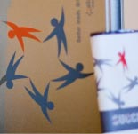
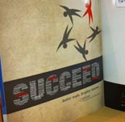
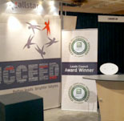
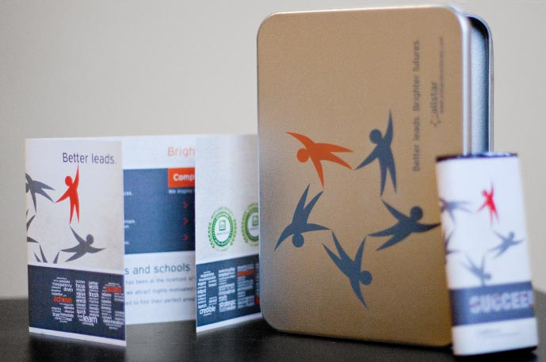
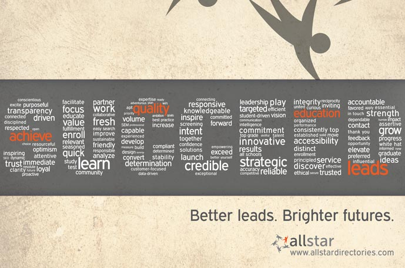
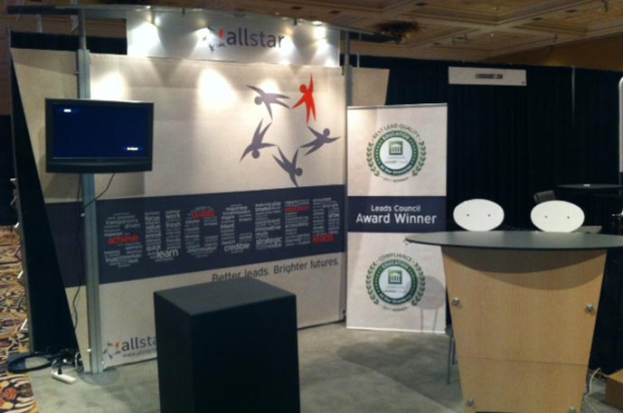
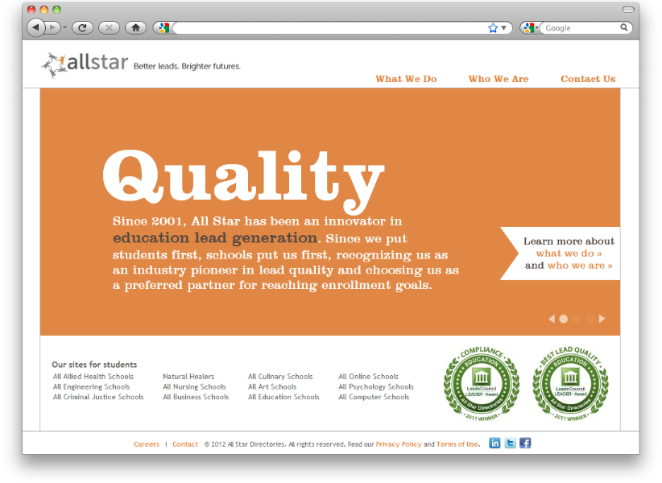
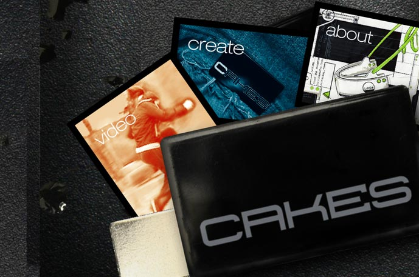
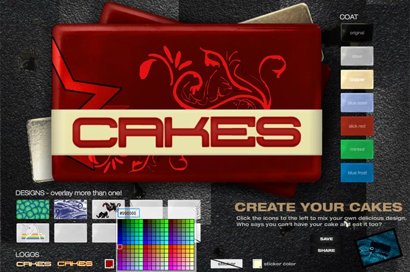
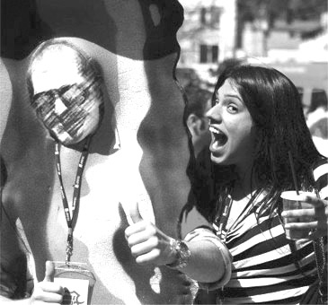

Discover your users' delight
All it takes is attentive UX research, a pensive design process, and highly collaborative teams. I love creating deliciously simple user experiences with all three. See how by flipping through a couple of my projects.
If you'd like me to join your team, let's talk.
Side note: I've crafted a jQuery experience to take the load off your mouse, if you like. Use left and right arrow keys to navigate and space bar to see details.
Amazon Chime
iOS, Android apps

Giveaways

Wordle Close-up

Booth

Gatefold collateral, metal tin to contain handouts, Seattle's Best chocolate bar

The SUCCEED "wordle" was built in Illustrator using a list of words collected from fellow All Stars

Booth banner and backdrop
Designing meetings in a work from home world
Amazon Chime—AWS’s video conferencing & chat service—was in the midst of a numerous updates when I joined. I lead the mobile team in bringing those changes to our apps in a conscientious way.
MORE DETAILS »
- Skills
- (
- Photoshop
- InDesign
- Illustrator
- )
THE BRANDING
LeadsCon was the first foray into rebranding efforts with the new logo. The company had a loose idea of what direction they wanted to go, and this event was the impetus to shape it even further.
THE CONUNDRUM
Creating a design that would translate to multiple final products in a very short amount of time.
PROCESS
- Aggregate and finalize core messaging
- Provide three initial varieties for solutions
- Finalize and refine solution (SUCCEED "wordle")
- Supply final design for various deliverables
Coordinating with business development, we decided that the messaging needed to convey to current and potential vendors/partners that All Star had established its priority as being a lead provider of quality and consistency in the industry. All Star wanted to position itself as the key to success for both businesses and for prospective students. Our old logo had been rather non-descript, so we wanted to build a brand that was recognizable and distinct from competitors.
With this in mind, I created a design that would stand apart from the overly glossy ads of our competitors. They tended to lean on trendy, web 2.0 designs and stock imagery. I aimed for a design that felt more genuine, authentic, and utilized white space in a way that the dead-center text ads did not. One of the solutions I created, which would be the final choice, was a poster style ad that put the "wordle" which spelled SUCCEED in the forefront and used the All Star symbol to balance it. The bold shapes and label-like quality of the SUCCEED wordle lent itself well to the variety of final products it needed to transition onto.
Amazon PayCode
Web and mobile

LAUNCH SITE
Who uses cash anyways?
My first task after joining Amazon was working on an experimental payment method that had the potential to unlock access for unbanked potential customers.
MORE DETAILS »
- Skills
- (
- Photoshop
- HTML / CSS
- jQuery
- )
THE CONUNDRUM
All Star had a new logo, but their corporate website was still sorely outdated.
THE EVOLUTION
The new logo was a drastic change from the previous one, which had been around since the beginning of the company 8 years ago. The company itself had undergone many changes to position itself as an industry leader. They wanted this image to be loud and clear through rebranding.
PROCESS
- Work with business development, content team, and creative director to filter core copy
- Collaborate with creative director to ideate designs
- Select and finalize a design style
- Build out pages according to style in Photoshop
- Coordinate photo shoots of executives, employees, and office space for assets
- Build pages in HTML/CSS/Javascript
- Debug and cross-browser test
The rebrand was an effort to revitalize All Star's B-to-B image with customers and partners. The design team collaborated to work out a style that would represent the company's changes. The influence of this endeavor would then be used to rebrand All Star's various properties in order to attract more users on the B-to-C side.
Content and Business Development reworked the copy and messaging, and they needed a new look to package it all in. From there, I coordinated with the creative director to establish a style that would be consistent across all the pages. I mocked up the pages, created icon assets, and scheduled several photo shoots to acquire unique image assets. After the comps underwent a couple of reviews, I coded out the pages and the interactive slideshow on the homepage.
Cakes
Interactive + Motion

The microsite gives customers an up-close look at Cakes. Designed and developed in Flash.

Interactive app allows users to customize product. Designed and developed in Flash.
Concept: Be a one-person design house.
Plan and execute a multimedia marketing campaign for a new product that utilizes recycled materials.
MORE DETAILS »
- Skills
- (
- Flash
- Photoshop
- Actionscript 3
- Final Cut Pro
- After Effects
- )
THE CLIENT
Independent industrial designer
THE PRODUCT
A unique and literally magnetic product to pin up clothing (a little like cufflinks that can be worn anywhere), utilizing scrap galvanized steel.
THE CONUNDRUM
Selling Cakes beyond the appeal of it being a "green" recycled product.
PROCESS
- Brainstorm key concepts and messaging
- Sketch and construct wireframes and sitemap
- Sketch out storyboard for commercial
- Provide three initial varieties for website solutions
- Finalize design, set up photo shoots, and collect miscellaneous assets
- Film raw footage for commercial and mix auditory assets in Soundbooth
- Construct site in Photoshop, build it out in Flash
- Design and build Flash app
- Post-production work on commercial
- Debug
We agreed the focus should be making the appeal of CAKES as a trendy fashion accessory that could be personalized and worn decoratively as well as practically. The idea was to target a younger audience that gravitates towards buying Sketchers and Marc Ecko.
By creating a promotional video and an interactive app, I tried to create a fun, individual, and active image to associate with the brand. The idea was not just to get kids to wear them, but to also be creative about how they wore them.
Local Woman Bites Bacon Man

Accused pictured with victim seconds before the offense occured.
*Photo has been altered to protect the identity of the victim.
SEATTLE (AP) — The web designer based in Seattle is faced with prosecution for allegedly biting a man in a bacon costume at the Fremont Food Truck Rodeo.
The perpetrator claims to have mistaken him for a real piece of bacon the size of a human adult. "It did seem like it was too good to be true when I gave it some more thought later," she admitted to authorities.
Upon further questioning, the accused attempted the plead the fifth. When she realized she wasn't quite sure what that was, she proceeded to plead "Really Hungry At the Time."
The media frenzy, incited by a slow news day and this event, led journalists to delve into the accused's past. She has a well-recorded history of bacon-infatuation, as well a propensity for creative cries for attention, including, but not limited to, fabricating news stories.
Bacon Man has declined to comment.
I like making things that connect with people. Sometimes to make them laugh, occasionally make them sad, ideally make them think, and hopefully to evoke some kind of response that will in turn bring a reaction out of me. I've always enjoyed designing in an interactive/interaction capacity because it's a sort of dialogue that happens on an instinctual level, which makes it feel very genuine. It's where I'm voracious to learn more, and I look forward to continue to grow.
I've designed across a range of different mediums, from web to print to motion, and my previous design experience has given me a deep understanding of interactive, motion, web, and the extensive gray areas in which they all overlap. I think my ability to come up with solid solutions for many of them comes from strong design fundamentals and trying to explore the best techniques for each process. I've picked up a plethora of skills, most recently a lot of Javascript for front-end development, purely out of a desire to create things and see them in action.